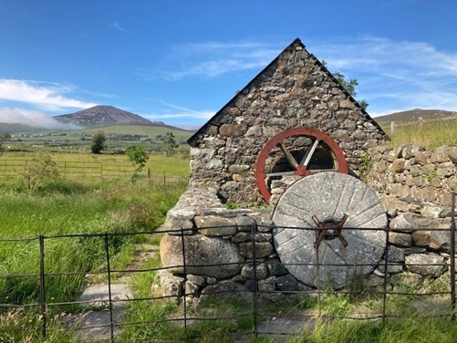

Melin Carnguwch
Yn ôl pob tebyg, mae’r felin unllawr wedi’i hadnewyddu, tua’r un cyfnod ag y chwalwyd bwthyn y melinwr, gan y bu’r olwyn ddŵr yn rhan o’r tŷ ar y dechrau. Gellir mynd iddi drwy ddrws llydan ar yr ochr orllewinol ac nid oes ffenestri ynddi. Mae twll yr olwyn yn wag, ac yn dal i’w weld ar y talcen sy’n wynebu’r gogledd-ddwyrain, ac mae’r twll i ddal yr echel wedi ei gau bellach. Heddiw, mae pwll islaw’r felin, ond nid oes unrhyw olion o’r ffrwd a arferai gario dŵr at y felin wreiddiol.
